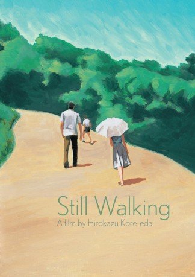

#4885 Still Walking
 
 IMDB-Wertung: 8.0 / 10
IMDB-Wertung: 8.0 / 10  Metascore: 0
Metascore: 0 
Jedes Jahr im Sommer versammelt sich Familie Yokoyama zum Gedenken an den verstorbenen Junbei im Haus der Eltern. Der pensionierte Kyohei hat auch nach 15 Jahren noch immer nicht den Tod seines Sohnes verkraftet und auch seine Frau Toshiko Eher widerwillig reist der zweitgeborene Sohn Ryota mit seiner Frau Yukari und deren Sohn aus erster Ehe an. Seine Schwester Schwester Chinami Kataoka und ihre Famile erwarten sie bereits im Elternhaus. An einem Sommertag tauscht die Famile Neuigkeiten und Erinnerungen aus, wobei schon lange vergrabene Gefühle wieder hervor kommen.
Jahr: 2008
Dauer: 114 Minuten
FSK: 6
Land: Japan Studio: Filmmuseum DistributieTonspuren:
Untertitel: Deutsch, Englisch,
Auflösung: 1080p (1920x1040) Größe: 8294 MB
Genre: Drama
Regisseur: Hirokazu Koreeda
Drehbuch: Rob Zombie
Soundtrack:
Darsteller:
- Hiroshi Abe als Ryota Yokoyama
 Kirin Kiki als Toshiko Yokoyama
Kirin Kiki als Toshiko Yokoyama- Yoshio Harada als Kyohei Yokoyama
- Yui Natsukawa als Yukari Yokoyama
- You als Chinami Kataoka
- Kazuya Takahashi als Nobuo Kataoka
- Shohei Tanaka als Atsushi Yokoyama
- Ryôga Hayashi als Mutsu Kataoka
- Haruko Katô als
- Hotaru Nomoto als Satsuki Kataoka
- Susumu Terajima als Sushi deliverer
Datei: X:\HD-Eastern-Modern(N-Z)\Still Walking (2008, FSK6, 1920x1040).mkv seit 28.11.2016
Festplatte: HD Eastern+Western
 Es gibt insgesamt 76 Filme in der Gruppe 'HD-Eastern-Modern(N-Z)'
Es gibt insgesamt 76 Filme in der Gruppe 'HD-Eastern-Modern(N-Z)'